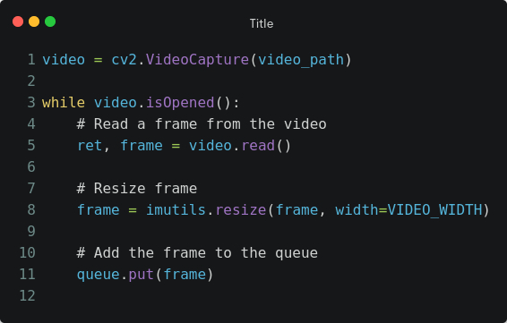

Código-Fonte
Logs de execução
1. Introdução
Este relatório descreve um projeto em que implementamos um programa cliente-servidor UDP em python para transmitir vídeo em tempo real pela rede. O objetivo do projeto é demonstrar a viabilidade de transmitir vídeos usando o protocolo UDP, apesar da sua falta de garantia de entrega e order dos pacotes enviados. A aplicação é construída em duas partes: um servior que captura, comprime e envia frames para os clientes e um cliente que recebe e exibe o vídeo em tempo real.
Neste relatório, descreveremos a arquitetura do sistema, as tecnologias e ferramentas utilizadas, os desafios enfretados durante o desenvolvimento e as soluções encontradas pela dupla. Além disso, apresentaremos resultados e discussões sobre o funcionamento e desempenho do programa, incluindo a quantidade de pacotes que se perderem e chegaram fora de ordem.
2. Desenvolvimento
Nesta seção apresentamos as particularidades da nossa implementação, entrando em maiores detalhes a respeito do código do cliente e do servidor.
2.1. Formato do PDU da Aplicação
A aplicação desenvolvida possui o formato de PDU abaixo:
| frame | sequence | fps | payload_size | total_frames | payload |
|---|---|---|---|---|---|
| 4 Bytes | 4 Bytes | 2 Bytes | 2 Bytes | 4 Bytes | 1 - 5000 Bytes |
frame: Indica o número do frame ao qual este pacote pertence.
sequence: Indica a sequência deste pacote dentro do frame especificado.
fps: Indica o fps do vídeo que está sendo transmitido. É necessário enviar o fps em todos os pacotes porque clientes podem começar a ouvir o servidor a qualquer momento durante a transmissão.
payload_size: Indica o tamanho do payload em bytes.
total_frames: Indica o número total de frames. É utilizado pelo cliente para detectar que recebeu o último frame e que o server parou de transmitir.
payload: Os bytes a serem transmitidos.
Podemos notar no PDU acima que os campos fps e total_frames são enviados de forma repetida em todo pacote. Isto é necessário devido à natureza da aplicação, que é execução de vídeo em tempo real. Deste modo, como clientes podem se inscrever a qualquer momento na transmissão, eles devem ser capaz de determinar o fps e qual é o último frame do vídeo.
2.2. O Servidor
Nesta seção discutiremos sobre a implementação do servidor, com por exemplo: como é realizada a leitura do vídeo, como é realizada a divisão do payload entre os vários pacotes etc.
2.2.1 Inscrições de Clientes
Assim que o servidor inicia ele começa a ouvir por inscrições dos clientes. O servidor implementa uma lista de clientes que estão inscritos para receber o streaming de vídeo. Dessa forma, existem mensagens específicas de subscription e unsubscription as quais são conhecidas pelo servidor para realizar a inscrição ou desinscrição de um cliente.
2.2.2 Leitura do Vídeo
Para esta tarefa, utilizamos a biblioteca OpenCV, uma ferramenta que nos permite ler o vídeo frame por frame. Sabemos que vídeos podem ser transmitidos de forma mais eficiente, mas isso depende do uso de outros procolos específicos, neste caso utilizamos apenas o protocolo UDP para transporte.
Figura 1 - Exemplo de leitura de vídeo com OpenCV
Cada frame é lido e, em seguida, armazenado em uma fila, uma estrutura de dados que a própria biblioteca Queue do Python fornece. Isso garante que o processo de leitura e armazenamento de quadros ocorra de forma organizada e eficiente, permitindo que outra parte do programa se preocupe somente com o envio dos pacotes
2.2.3 Divisão dos frames em pacotes
Com uma thread específica para a leitura do vídeo, criamos outra thread resposável pela divisão do frame em pacotes e envio dos mesmos. Esse processo ocorre da seguinte forma:
- Obtém um frame da fila;
- Codifica o frame para o formato JPEG;
- Divide os bytes do frame em pedaços menores, ou seja, em "chunks" com um tamanho máximo de 5000 bytes;
- Cada chunk é enviado para os clientes com informações incluídas no cabeçalho do pacote, tais como o índice do frame atual e o índice do chunk. Essa estratégia permite que o cliente organize os pacotes de forma a restaurar a ordem original do vídeo.
2.3. O Cliente
Nesta seção discutiremos sobre a implementação do cliente, como por exemplo: como é realizada a conexão com o servidor como os pacotes recebidos são geridos etc.
2.3.1. Organização dos Pacotes
Como vimos anteriormente, o PDU da aplicação possui dois inteiros que são importantes para a ordenação dos pacotes do lado do cliente, sendo eles o frame e o sequence. O cliente armazena todos os pacotes em um dicionário, o qual possui o seguinte formato:
{
'<frame-number>': {
'id': # Número do frame
'total': # Total de pacotes existente para este frame
'received': # Total de pacotes já recebidos deste frame
'data': {
'<packet-sequence>': {
'id': # Número de sequência
'data': # Bytes do pacote
}
...
}
}
...
}
As chaves marcadas como <frame-number> e <packet-sequence> são, respectivamente, o número do frame e a sequência do pacote em específico. Dessa forma conseguimos rapidamente adicionar pacotes recebidos no dicionário do frame ao qual pertencem. Essa estrutura se mostrou bastante útil porque conseguimos obter qualquer pacote já recebido de qualquer frame em tempo médio O(1), tornando assim a ordenação dos pacotes bastante eficiente já que a busca pelo pacote é rápida.
Uma particularidade da aplicação, a qual é necessária para detectarmos que um frame foi recebido por completo é aquela chave 'total' armazenada dentro do dicionário de cada frame. A aplicação recebe esta informação por meio do pacote de sequência 0 de cada frame, ou seja, todo pacote de sequência zero carrega em seu payload a quantidade total de pacotes que o servidor vai enviar para aquele frame, para que assim o cliente saiba quando um frame pode ser montado por completo. Dessa forma, quando o valor de 'received' é igual ao valor de 'total', então o cliente sabe que pode ordenar e montar o frame por completo.
Por fim, o frame montado é armazenado em um buffer que é então consumido pela thread responsável por rodar o vídeo. Este é um buffer circular simples onde todos os frames prontos vão sendo armazenados até que chegue o momento certo dele ser exibido, sendo este momento definido pelo fps do vídeo que está sendo transmitido.
2.3.2. O Player de Vídeo
Como mencionado anteriormente, o sistema utiliza um buffer circular para armazenar os quadros à medida que são processados, garantindo que sejam exibidos na tela em ordem. Essa função é desempenhada por uma thread que opera em um loop contínuo enquanto o vídeo ainda não foi concluído ou enquanto o buffer de quadros contém elementos. É importante notar que o sistema identifica o término do vídeo quando recebe a última sequência de dados ('received' igual ao valor 'total') do último quadro ('frame-number' igual a ('total_frames' - 1)), que é fornecida no cabeçalho de cada pacote de dados.
Para exibir os quadros na tela do cliente, o sistema utiliza a biblioteca OpenCV. Além disso, para controlar a taxa de quadros por segundo (FPS), é aplicada uma pausa (ou "sleep") de duração adequada (1 / FPS) antes de cada quadro ser exibido. É importante observar que o valor de FPS é transmitido a partir do servidor no cabeçalho de cada pacote de dados e é armazenado em uma variável global para garantir a exibição adequada dos quadros no ritmo correto.
2.3.3. A Contagem de Pacotes Perdidos
Nesta seção, apresentaremos a lógica que a dupla montou para fazer a contagem dos pacotes perdidos.
Como mencionado anteriormente, o cliente mantém uma estrutura de dicionário para armazenar todos os pacotes recebidos. Isso facilita a contagem de pacotes e funciona da seguinte maneira:
Inicialmente, uma variável que armazena a contagem de pacotes é definida como zero. Um loop é executado no dicionário, incrementando essa variável em dois cenários:
O primeiro cenário ocorre quando a chave 'total' não está presente no quadro. Isso indica que o cliente não recebeu o pacote com a sequência 0 do quadro, que é responsável por informar o número total de pacotes no quadro correspondente. Nesse caso, não é possível determinar com precisão quantos pacotes foram perdidos naquele quadro, pois o pacote que indica o total não foi recebido. Portanto, soma-se 1 ao valor original da variável de contagem de pacotes perdidos, já que pelo menos um pacote (o inicial) foi perdido.
O segundo cenário que incrementa essa variável é mais direto. Basta subtrair o valor encontrado na chave 'total' pelo valor encontrado na chave 'received' e incrementando esse valor na variável. Isso fornece a contagem exata de pacotes perdidos entre o total esperado e o total realmente recebido.
2.3.4. A Contagem de Pacotes Fora de Ordem
Nesta seção, apresentaremos a lógica que a dupla montou para fazer a contagem dos pacotes que chegaram fora da ordem.
Diferentemente de como ocorre a contagem de pacotes perdidos, a contagem de pacotes que chegam fora da ordem ocorre durante a chegada de pacotes do servidor. Basicamente, há uma variável, iniciada em 0, que armazena o número da sequência esperado para o número de sequência do pacote corrente. Se esse valor divergiar e o número de sequência esperado for maior que o número de sequência recebido do pacote imediamente anterior, então a valor da variável e incrementado em 1.